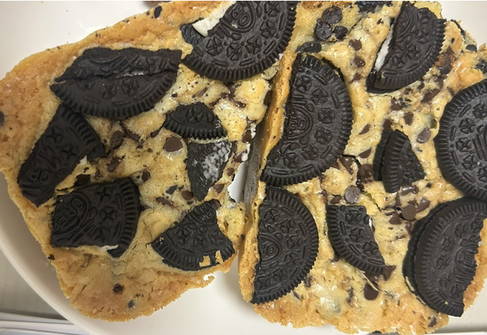

<!DOCTYPE html>
<html lang="ja">

</html>

<head>
    <meta charset="UTF-8">
    <title>山本の自炊日記：お菓子作り</title>
    <link rel="stylesheet" href="css/mystyle.css">
    <article>
        <ol>
            <li><a href="index.html"> トップ</a>&nbsp;&gt;</li>
            <li>お菓子作り</li>
        </ol>
    </article>
    <link rel="stylesheet" href="css/mystyle.css">
</head>

<body>
    <header>
        
        <h1 class="sub-h1">山本の自炊日記 </h1>
        
        <p class="okashi"></p>
        <li>オレオブロンディ</li>
        <li>☆材料☆</li>
        <li>A.卵1個</li>
        <li>A.砂糖60g</li>
        <li>A.塩小さじ1/2</li>
        <li>B.無塩バター55g</li>
        <li>B.ホワイトチョコ90g</li>
        <li>C.薄力粉65g</li>
        <li>C.ベーキングパウダー小さじ2/1</li>
        <li>D.チョコチップ　生地50g　飾り30g</li>
        <li>D.オレオ　生地６枚　飾り６枚</li>
        <li>☆作り方☆</li>
        <li>１．ボウルにAを入れて泡だて器で混ぜる。</li>
        <li>２．Bを電子レンジで溶かし、１に加えて混ぜる。</li>
        <li>３．Cをすべて振るい入れて混ぜる。</li>
        <li>４．生地用のDを入れて混ぜる。</li>
        <li>５．型（18センチスクエア型）に流しいれて、飾り用のDを乗せる。</li>
        <li>６．160℃に予熱したオーブンで30分焼く。（真ん中をつまようじで刺して、記事がついてこなければ出来上がり！）</li>

    </header>
    <footer>
        <small>© 2027 mamorecipi cooking.</small>
    </footer>
</body>